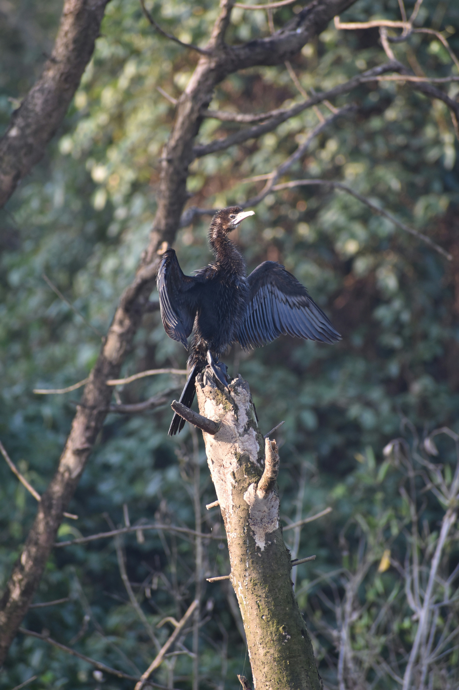

The Indian Cormorant is a dark waterbird with a long neck, slender bill, and distinctive greenish facial skin. It is an excellent swimmer and dives underwater to catch fish and other aquatic prey. Groups often perch together on exposed branches, rocks, or posts after feeding. It is widely distributed across freshwater wetlands and is especially common in southern and central India. Compared with the similar Little Cormorant, it is distinguished by the combination of features described above. Its preference for rivers, lakes, reservoirs, ponds, canals, marshes, and wetlands also helps separate it from species that use different habitats. Its characteristic behaviour, including dives underwater to catch fish and often rests with wings spread to dry them, provides another useful field clue. Taken together, these differences make it easier to distinguish from similar species when the bird is seen clearly.